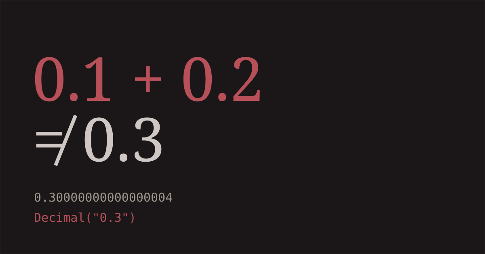
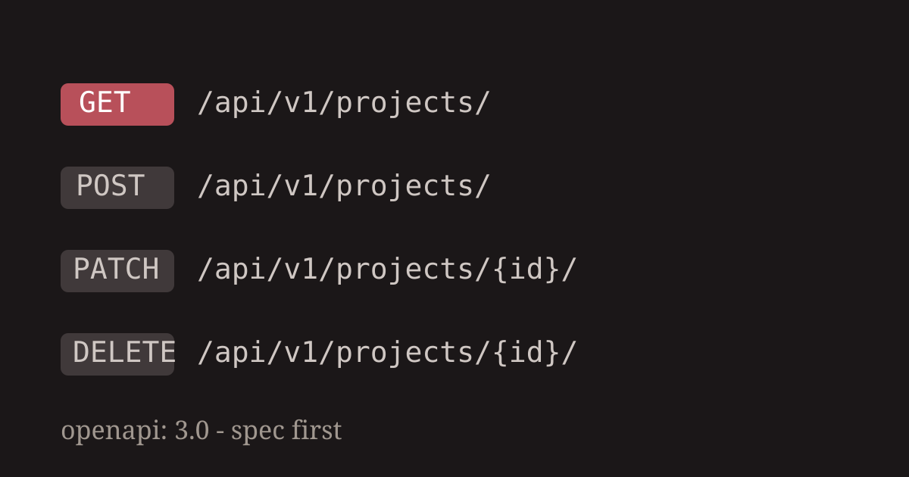
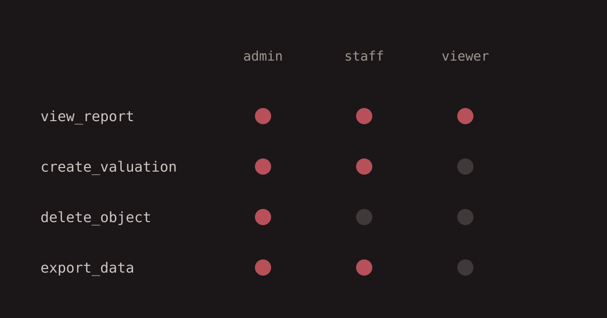

Blog
-

2026-11-08Why I stopped trusting an ORM with money
What building a valuation engine that banks rely on taught me about decimals, float drift, and where an ORM's convenience turns into a liability.
-

2026-10-22Designing the API before the team exists
Kigo's backend shipped an OpenAPI spec before most of the endpoints behind it existed. Here's why that ordering, not the framework, is what kept the team moving fast.
-

2026-09-30Permissions should be a row, not a deploy
Hard-coded roles are the first thing that breaks once a marketplace has real staff. What changed when I moved Lapka's permission checks into the database.